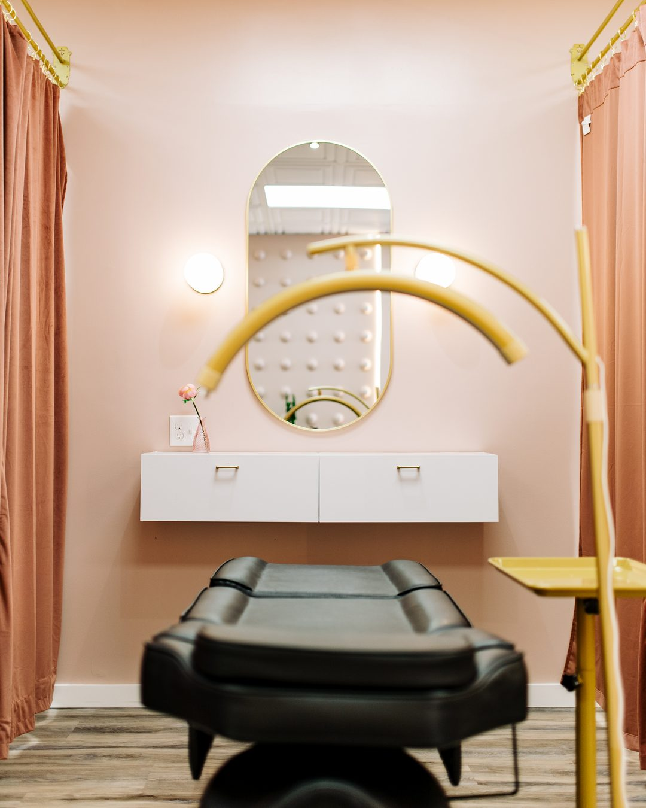

Yearly Touch-Up in Salem, NH
Yearly Touch-Up in Salem, NH starts at $300 and refreshes faded permanent makeup pigment on brows, lips, or eyeliner about 12 months after the original procedure — a separate, paid visit from the perfecting session already included 6 to 8 weeks earlier. Book with Master Permanent Makeup Artist Adriana Souza Santos at 117A Main Street, on Route 97.
- 18+
- Years in the industry
- 5,000+
- Procedures performed
- EN & PT
- Consultations
Yearly Touch-Up in Salem, NH is a maintenance visit at 117A Main Street, priced from $300 and scheduled about 12 months after your original brow, lip, or eyeliner procedure.
How Much Does a Yearly Touch-Up Cost in Salem, NH, and How Is It Different From the Perfecting Session?
A Yearly Touch-Up in Salem, NH starts at $300, with the final price set based on how much pigment remains. It is separate and paid, unlike the perfecting session, included in the original price and given only once, 6 to 8 weeks after the first appointment.
| Item | Detail |
|---|---|
| Yearly Touch-Up price | From $300, exact price set at the appointment |
| Perfecting session (not this visit) | Included in the original price, 6 to 8 weeks after the first procedure, one time only |
| Yearly Touch-Up (this visit) | Paid separately, about 12 months after the original procedure |
| What's included | Reassessment of remaining pigment, numbing, and the refresh procedure |
| Applies to | Brows, lips, or eyeliner performed at either Adriana's studio |
| Payment plan | 4 interest-free payments or longer, via Cherry; approval not guaranteed |
Who Should Book a Yearly Touch-Up in Salem, NH, and Who Should Not?
A Yearly Touch-Up in Salem, NH suits clients near Route 97 whose pigment has visibly faded roughly a year after the original procedure. It is not right for anyone still inside the perfecting-session window, or anyone pregnant, breastfeeding, or currently using isotretinoin.
- Good fit: Salem, Methuen, or Windham clients whose pigment has faded about 12 months later, including Portuguese speakers
- Not a fit: anyone pregnant, breastfeeding, or under 18, at either studio
- Not yet: still inside the 6- to 8-week perfecting-session window (call to confirm), or isotretinoin, blood thinners, or autoimmune conditions without clearance — see the contraindications guide
How Does a Yearly Touch-Up Appointment Work at the Salem Studio?
A Yearly Touch-Up appointment at the Salem studio starts with an assessment of how much original pigment remains, sets the final price on that assessment, then refreshes color under topical numbing. At the Salem studio, appointments are typically shorter than the original procedure, since the shape and design already exist and only color needs restoring.
- Reassessment of existing pigment; price confirmed, from $300
- Color matching to the original or an updated shade
- Application of topical numbing
- Pigment refresh procedure
- Written aftercare instructions to take home
Full healing detail is in the aftercare guide.
Why Book a Yearly Touch-Up at the Salem, NH Studio Specifically?
New Hampshire licenses body art practitioners at the state level under RSA 314-A, and the Town of Salem separately licenses the studio and artist under Salem Chapter 433. The studio sits on Route 97 near I-93 Exit 2, reachable from Methuen, Windham, Pelham, Haverhill, and North Andover within about 9 miles.
Main Street is New Hampshire Route 97 along its full length, terminating at NH-28, Broadway. New Hampshire has no passenger rail at all — MBTA Commuter Rail ends at Lowell and Haverhill, in Massachusetts. Salem's population is 30,964.
| Town | Driving distance |
|---|---|
| Methuen, MA | 4.5 mi |
| Windham, NH | 5.3 mi |
| Pelham, NH | 6.8 mi |
| Haverhill, MA | 8.4 mi |
| North Andover, MA | 8.7 mi |
What Backs the Artist Performing Yearly Touch-Ups in Salem?
Adriana Souza Santos, the Master Permanent Makeup Artist performing Yearly Touch-Ups at the Salem studio, has completed more than 5,000 procedures and trained more than 300 students over an 18-plus year career, and holds an AAM Diamond Certified Trainer credential.

What If My Yearly Touch-Up Price Is Higher Than Expected, or the Color Doesn't Match?
The final Yearly Touch-Up price depends on how much pigment remains at the appointment; more fading generally means more work and a higher price above the $300 starting point, confirmed before the procedure begins. Color adjustments afterward are discussed at the same visit, not assumed automatically.
Deposit terms are confirmed by phone at (978) 223-7496. Signs that need a doctor instead of the studio are listed in the aftercare guide.
Frequently Asked Questions About Yearly Touch-Up in Salem, NH
Yearly Touch-Up in Salem, NH is performed at 117A Main Street, Salem, NH 03079, reached at (978) 223-7496. The studio is open Monday through Saturday, 10:00 a.m. to 6:00 p.m., closed Sunday, a different address than the Wilmington, MA studio.
A Yearly Touch-Up in Salem, NH starts at $300. The exact price depends on how much of the original pigment remains, which the artist assesses at the appointment; there is no fixed ceiling published in advance, since fading varies from client to client.
The perfecting session is included in the original procedure price and happens once, 6 to 8 weeks after the first appointment, to correct early healing. The Yearly Touch-Up is a separate, paid visit from $300, scheduled about 12 months later to refresh pigment that has naturally faded since then.
Yes. Main Street in Salem is New Hampshire Route 97 along its entire length, with its western terminus at NH-28, Broadway. The address sits in the Salem Depot area, and the nearest I-93 access is Exit 2, Pelham Road, per the Town of Salem's own transportation plan.
No. New Hampshire has no passenger rail service at all; MBTA Commuter Rail ends at Lowell and Haverhill, both in Massachusetts. Clients from Methuen or Haverhill drive to the Salem, NH studio for their Yearly Touch-Up appointment instead, since no rail extension is under construction.
Yes. New Hampshire licenses body art practitioners at the state level under RSA 314-A. The Town of Salem separately licenses both the studio and the artist under Salem Chapter 433, so two levels of licensing apply here, unlike Wilmington's single town-only permit.
Yes. The Salem studio offers payment plans through Cherry Technologies, an independent lender separate from Adriana's Permanent Makeup. Options include 4 interest-free payments or a longer plan up to 24 months with interest. Approval is not guaranteed; Cherry sets the terms, not the studio.
Yes. Master Permanent Makeup Artist Adriana Souza Santos consults in both English and Portuguese at the Salem studio. Clients who prefer discussing their touch-up in Portuguese can request that language when booking, online through Fresha or by phone at (978) 223-7496.
What Can Be Refreshed With a Yearly Touch-Up at the Salem Studio
A Yearly Touch-Up at the Salem studio can refresh brow techniques, Lip Blush, or any eyeliner style originally performed there, each assessed and priced individually from $300. The original technique's own Salem page has full pricing and healing detail for that procedure.
- Yearly Touch-Up overview — full maintenance guide and timing
- Microblading in Salem — original $550
- Lip Blush in Salem — original $550
- Eyeliner Combo in Salem — original $500
See the Salem, NH studio page or the aftercare guide.
Which Licenses Cover This Work in Salem, NH?
Two levels apply in New Hampshire. The state issues Body Artist license 4283 to Adriana Souza Santos, valid through 18 July 2028 and verifiable at the state’s own public lookup. The Town of Salem separately licenses the artist as a Permanent Make-Up Artist under BODA-10 and the establishment under BODE-4.
| License | Classification | Number | Valid through |
|---|---|---|---|
| New Hampshire OPLC | Body Artist | 4283 | 18 Jul 2028 |
| Town of Salem | Permanent Make-Up Artist | BODA-10 | 28 Feb 2027 |
| Town of Salem | Body Art Establishment | BODE-4 | 28 Feb 2027 |
Check the state license yourself. New Hampshire publishes a lookup at forms.nh.gov/licenseverification. Search Adriana Souza Santos, or license 4283, and the state confirms the status without relying on anything published here.
The town license is worth noting: Salem issued BODA-10 specifically as a Permanent Make-Up Artist license under Salem Chapter 433, not as a general tattoo license.
Ready to Book Your Yearly Touch-Up in Salem, NH?
Book online at 117A Main Street, or call (978) 223-7496. Prefer Wilmington, MA? See that studio's Yearly Touch-Up page.
Book Now in Salem